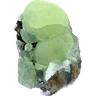

ManuscriptCorrespondence GrimoireCorrespondence GrimoireLungs☆SaveTypeBodyAstrology2CancerGeminiMinerals40AdamiteAmberAmmoliteAndean Blue OpalAngeliteAventurineBerylBlue AventurineBlue TourmalineCatliniteChrysocollaDiopsideDioptaseEmeraldFluorapatiteGreen AventurineGreenlanditeGreenstoneHiddeniteHollandite QuartzIndicolite QuartzIron PyriteKunziteLapis LazuliMorganitePeridotPetrified WoodPink TourmalinePrehnitePrehnite with Epidote InclusionsQuantum QuattroRhodochrositeRhodoliteRhodoniteSardonyxScheeliteScoleciteSerpentine in ObsidianTurquoise⛈️PietersiteShow all 40Oils41Angelica Root Essential OilAngelica Seed Essential OilAnise Essential OilAsafetida Essential OilAtlas Cedarwood Essential OilBasil Essential OilBay Laurel Essential OilBorneol Essential OilCabbage Rose AbsoluteCamphor Essential OilCascarilla Bark Essential OilClary Sage Essential OilCommon Thyme Essential OilCostus Essential OilCypress Essential OilFir Needle Essential OilFrankincense Essential OilGarlic Essential OilHemlock Spruce Essential OilLavandin Essential OilLemon Essential OilLemon-Scented Eucalyptus Essential OilLevant Storax Essential OilLongleaf Pine Essential OilMastic Essential OilMyrtle Essential OilOpopanax Essential OilOrris AbsolutePeppermint Essential OilSandalwood Essential OilScotch Pine Essential OilSilver Fir Templin Essential OilStar Anise Essential OilTea Tree Essential OilTexas Cedarwood Essential OilTolu Balsam Essential OilViolet Flower AbsoluteViolet Leaf AbsoluteVirginian Cedarwood Essential OilWild Ginger Essential OilYarrow Essential OilShow all 41Other Correspondences6Heart ChakraSolar Plexus ChakraThroat Chakra💨Breath🧘Body🫁Respiratory SystemPlants7Atlas CedarBasilBay LaurelCajuputCardamomTolu BalsamVirginian Cedar